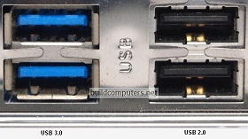
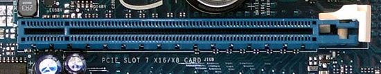
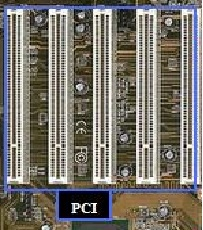
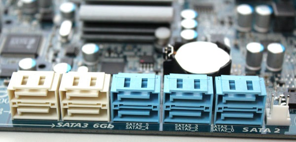

Le choix de la carte mère est souvent négligé. Cependant il s'agit bel et bien de composant important car celle-ci fournit un nombre de port différent (PCI, USB, Sata, etc...) suivant la gamme choisi.
Chipset
Les chipsets de carte mère sont aujourd'hui produit seulement par AMD et Intel. Il faudra donc s'assurer du chipset d'une carte afin de savoir quel processeur sera compatible avec la carte mère.
Le chipset est un jeu de composants électroniques permettant de gérer les flux de données entre le processeur, la mémoire et les différents périphériques. Les performances globales dépendent donc du chipset.
La taille
Il existe différentes tailles de carte mère. La taille est un facteur qui peut limiter les fonctionnalités proposées par la carte. Les principales sont (de la plus petite à la plus grande): Micro ATX, Mini ATX et ATX.
Equipement
Suivant la carte mère choisi, le nombre de possibilité que celle-ci peut offrir sera différent.
Nombre de port USB: suivant la carte mère, il peut y en avoir au minimum 4 en USB2. Plus la carte monte en gamme, plus il y aura de ports. Il faut noter qu'une carte haut de gamme proposera des ports USB3 (ces derniers offrent une vitesse de transfert de données accru par rapport à l'USB2, si toutefois ils sont utilisés avec une clée compatible USB3).

Illustration de port USB2 et USB3
Nombre de port PCIe x16 (graphique): Sur les cartes bas de gamme ce port est inexistant. Les cartes milieu de gamme en revanche en propose un. Enfin les cartes haut de gamme proposent 2 ports PCIe x16 afin de pouvoir brancher sur la carte deux cartes graphiques (SLI) pour les ordinateurs de joueurs exigents.

Illustration d'un port PCIex16
Nombre de port PCI x1: touts les types de carte en proposent, mais leur nombre différent suivant la qualité de la carte. Ce type de port permet de brancher différentes cartes optionnelles comme par exemple les cartes réseau, wifi, bluetooth ou encore son.

Illustration de port PCIx1
Nombre de port SATA3: Les cartes mère bas de gamme n'en proposent pas. Ce port permet de brancher des lecteurs SSD et ainsi profiter de leur vitesse accrue par rapport au port SATA2. Il est également possible d'y connecter des disques dur classique mais le débit sera le même que pour un port SATA2.

Illustration de port SATA2 et SATA3
Nombre de port SATA2: Disponible sur toutes les catégories de carte mère. Ce port permet de connecter les disque dur ainsi que les lecteurs optiques.
Options intégrées: Toutes les cartes mère proposent désormais des périphériques intégrés tel que la carte graphique, la carte son, la carte réseau et éventuellement la carte wifi ou bluetooth (uniquement sur les cartes haut de gamme).
Vous trouverez ci-dessous un tableau indiquant la qualité des cartes en fonction des prix.